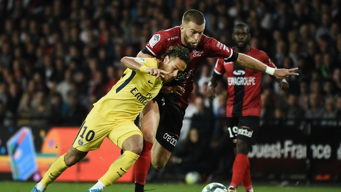
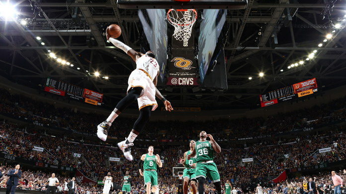
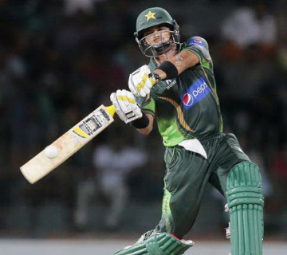
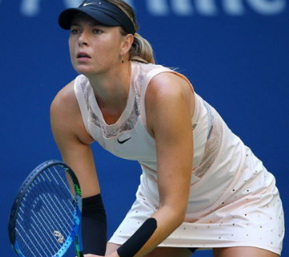
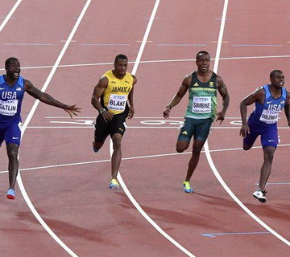

Найпопулярніші види спорту8-МТ, Плесканюк Даня /DPL/ |
|||||
ФутболЗ більш ніж 4 мільярдами шанувальників, це, безумовно, найпопулярніший вид спорту в світі. Основне поширення футбол отримав в Європі, де для багатьох він став не просто грою, а способом життя. Чемпіонат світу ФІФА є найбільш знаковою подією в цьому виді спорту. |
БаскетболУ баскетболу більше 1 мільярда шанувальників. Доходи NBA складають понад 5 мільярдів доларів щорічно. Користуються шаленим глядацьким інтересом професійні ліги роблять баскетбол самим швидкозростаючим видом спорту в світі. |
||||
КрикетБагато хто навіть і не підозрюють, що у крикету більше 2 мільярдів шанувальників по всьому світу. Основна географія поширення цього виду спорту доводиться на Англію, Індію, Пакистан, Бангладеш. |
Великий тенісГлобальне охоплення і аудиторія в 1 мільярд осіб роблять теніс найпопулярнішим індивідуальним видом спорту в світі. Тенісні заходи проходять по всьому світу весь календарний рік без перерв. |
Легка отлетикаЛегка атлетика, безумовно, самий глобальний вид спорту, що включає в себе безліч дисциплін. Легка атлетика також є найпопулярнішим подією на Олімпійських іграх. |
|||
Також популярні:
|
|||||